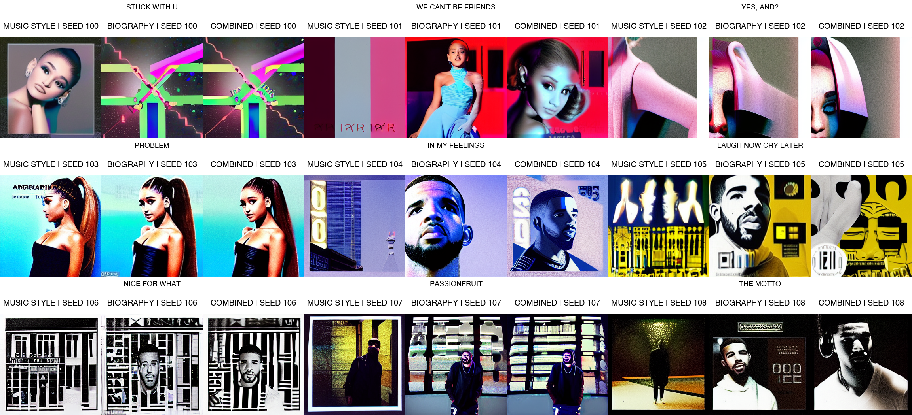

This report documents the adaptation and evaluation of an audio-conditioned album-cover generation system. The system combines CLAP audio embeddings, Stable Diffusion 1.5, LoRA fine-tuning, and curated artist context for Ariana Grande, Drake, and LE SSERAFIM. Three shared models were trained for one epoch using style-only, biography-only, and combined artist context. Fifty-one valid song-cover pairs were used for training. Nine initially unusable examples were later repaired and retained as a held-out test set. The evaluation produced 27 images per run, with controlled comparisons across context modes. Results indicate strong artist-level visual conditioning but limited evidence of song-specific differentiation.
The GitHub repository andreali31/Mickey_Mouse was cloned locally. Its original implementation used Stable Diffusion 1.5, CLAP audio embeddings, a learned audio projector, and LoRA adaptation of the Stable Diffusion UNet.
The original preprocessing script expected data/<artist>/audio and data/<artist>/covers. The checked-in dataset instead used top-level folders such as arianasongs, arianacovers, drakesongs, and lesserafimcovers. The preprocessing code was modified to support this layout and accept JPG, JPEG, and PNG cover images.
The repository contained 60 nominal audio examples: 20 songs for each of the three artists. At the time the training cache was created, seven MP3 files were empty or corrupt and two songs lacked same-stem cover files. These nine examples were excluded automatically.
| Artist | Valid training pairs |
|---|---|
| Ariana Grande | 16 |
| Drake | 15 |
| LE SSERAFIM | 20 |
| Total | 51 |
The nine excluded files were subsequently repaired in the remote repository. Because they were absent from the existing training cache and checkpoints, they were used as a held-out test set:
stuckwithu, wecantbefriends, yesand, and problem.inmyfeelings, laughnowcrylater, niceforwhat, passionfruit, and themotto.A structured JSON profile was created for each artist. Every profile contained a display name, musical and visual style, biographical background, and source URLs. Three experimental context modes were defined:
laion/clap-htsat-unfused.The result was one 512-dimensional CLAP embedding for each song.
Each cached PyTorch record stored the audio embedding, image latent, artist identifier, and song identifier.
The original system stored artist names but did not condition the model on them. The revised system uses both audio and artist context.
A trainable multilayer perceptron projects the 512-dimensional CLAP embedding into eight 768-dimensional audio tokens.
The selected artist profile is tokenized and encoded by Stable Diffusion 1.5's frozen CLIP text encoder, producing 77 tokens of dimension 768.
The eight audio tokens and 77 text tokens are concatenated into 85 cross-attention tokens and supplied to the UNet through encoder_hidden_states. The CLIP text encoder remains frozen. Only the audio projector and LoRA parameters are optimized.
Classifier-free guidance dropout was set to 0.1. For approximately 10% of training samples, audio tokens were replaced with a learned null token and text tokens were replaced with the frozen CLIP embedding of an empty prompt. This enables conditional and unconditional predictions during inference.
The base model was runwayml/stable-diffusion-v1-5. Base UNet weights were frozen. LoRA adapters were applied to to_q, to_k, to_v, and to_out.0.
| Parameter | Value |
|---|---|
| LoRA rank | 8 |
| LoRA alpha | 16 |
| Learning rate | 1 x 10^-4 |
| Weight decay | 1 x 10^-4 |
| Batch size | 4 |
| Gradient clipping | 1.0 |
| CFG dropout | 0.1 |
| Training seed | 0 |
| Epochs | 1 |
| Optimization steps | 13 per model |
Approximately 1.59 million UNet parameters were trainable through LoRA. The audio projector was also trained. drop_last=False ensured that all 51 examples participated.
Three separate shared-model checkpoints were trained. All checkpoints used the same 51 examples, all three artists, identical initialization seed, and identical hyperparameters. The only experimental difference was the artist context text.
| Checkpoint | Context | Final reported batch loss |
|---|---|---|
| Style | Musical and visual style | 0.0393 |
| Biography | Biographical background | 0.0400 |
| Combined | Style and biography | 0.0399 |
| Parameter | Value |
|---|---|
| Scheduler | DPM-Solver Multistep |
| Resolution | 256 x 256 |
| Diffusion steps | 30 |
| Guidance scale | 5.0 |
| Audio input | Centered ten-second segment |
| Negative condition | Null audio plus empty text |
For each generation, the test audio was encoded with CLAP, projected into audio tokens, concatenated with the selected artist profile embedding, and passed to Stable Diffusion with the corresponding LoRA checkpoint.
Each of the nine repaired songs was generated once with every checkpoint, producing 27 images and nine three-column comparison sheets.
The first evaluation used seed 0 for every song. This controlled all random initialization but caused visually repetitive compositions within each artist.
The evaluation was repeated with a deterministic different seed for each song. Within a song, the same seed was retained across all three context modes so context remained the only experimental difference.
| Song | Seed |
|---|---|
| stuckwithu | 100 |
| wecantbefriends | 101 |
| yesand | 102 |
| problem | 103 |
| inmyfeelings | 104 |
| laughnowcrylater | 105 |
| niceforwhat | 106 |
| passionfruit | 107 |
| themotto | 108 |

Training and inference were performed on an Apple Silicon macOS computer. PyTorch reported no CUDA or MPS device, so execution used the CPU. After model loading, one training epoch took approximately one minute. A 30-step image generally required approximately 40 to 55 seconds. Hugging Face model components were downloaded once and subsequently loaded from the local cache.
The experiment demonstrates that artist context can strongly influence an audio-conditioned Stable Diffusion model after one epoch. However, it does not establish robust song-specific learning.
The most defensible conclusion is that the system learned broad artist-associated visual patterns, while evidence for song-level audio differentiation remains limited.